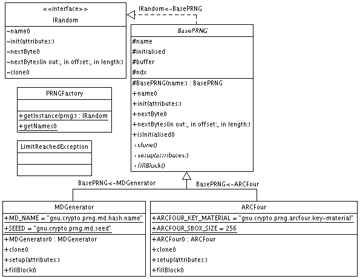

|
For the latest news and information visit The GNU Crypto project |
||||||||||
| PREV PACKAGE NEXT PACKAGE | FRAMES NO FRAMES | ||||||||||
See:
Description
| Interface Summary | |
| IPBE | Trivial interface to group Password-based encryption property names. |
| IRandom | The basic visible methods of any pseudo-random number generator. |
| Class Summary | |
| ARCFour | RC4 is a stream cipher developed by Ron Rivest. |
| BasePRNG | An abstract class to facilitate implementing PRNG algorithms. |
| ICMGenerator | Counter Mode is a way to define a pseudorandom keystream generator using a block cipher. |
| MDGenerator | A simple pseudo-random number generator that relies on a hash algorithm,
that (a) starts its operation by hashing a seed, and then (b)
continuously re-hashing its output. |
| PBKDF2 | An implementation of the key derivation function KDF2 from PKCS #5: Password-Based Cryptography (PBE). |
| PRNGFactory | A Factory to instantiate pseudo random number generators. |
| UMacGenerator | KDFs (Key Derivation Functions) are used to stretch user-supplied key material to specific size(s) required by high level cryptographic primitives. |
| Exception Summary | |
| LimitReachedException | A checked exception that indicates that a pseudo random number generated has reached its theoretical limit in generating random bytes. |
Provides a basic API for using cryptographically strong pseudo random number generation algorithms.
Random number generators, used in cryptography, are based on algorithms which output sequences of statically independent and unbiased bits.
The following diagram shows the important classes participating in this package:

The following example shows how to instantiate, use, and clone a PRNG based on the RC4 stream cipher algorithm.
byte[] b1 = new byte[16]; byte[] b2 = new byte[16]; HashMap attrib = new HashMap(); attrib.put(ARCFour.ARCFOUR_KEY_MATERIAL, new byte[0]); IRandom r1 = PRNGFactory.getInstance(Registry.ARCFOUR_PRNG); r1.init(attrib); r1.nextBytes(b1, 0, b1.length); IRandom r2 = (IRandom) r1.clone(); r1.nextBytes(b1, 0, b1.length); r2.nextBytes(b2, 0, b1.length);
|
For the latest news and information visit The GNU Crypto project |
||||||||||
| PREV PACKAGE NEXT PACKAGE | FRAMES NO FRAMES | ||||||||||